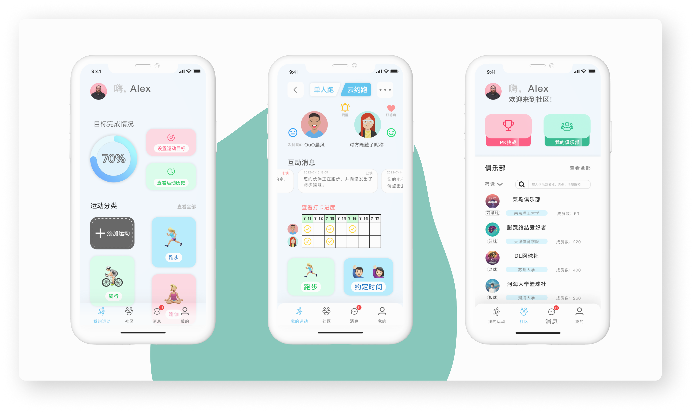
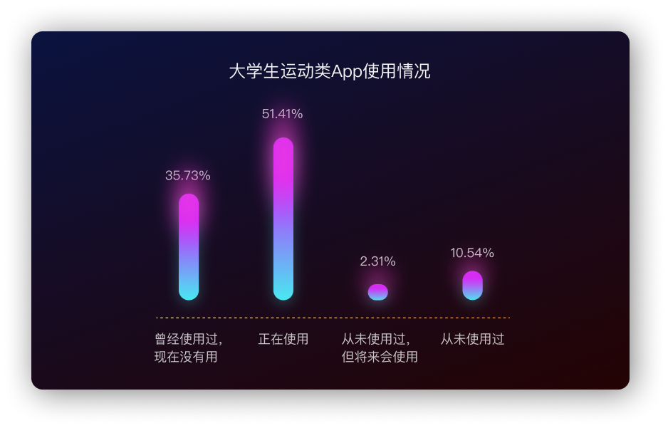
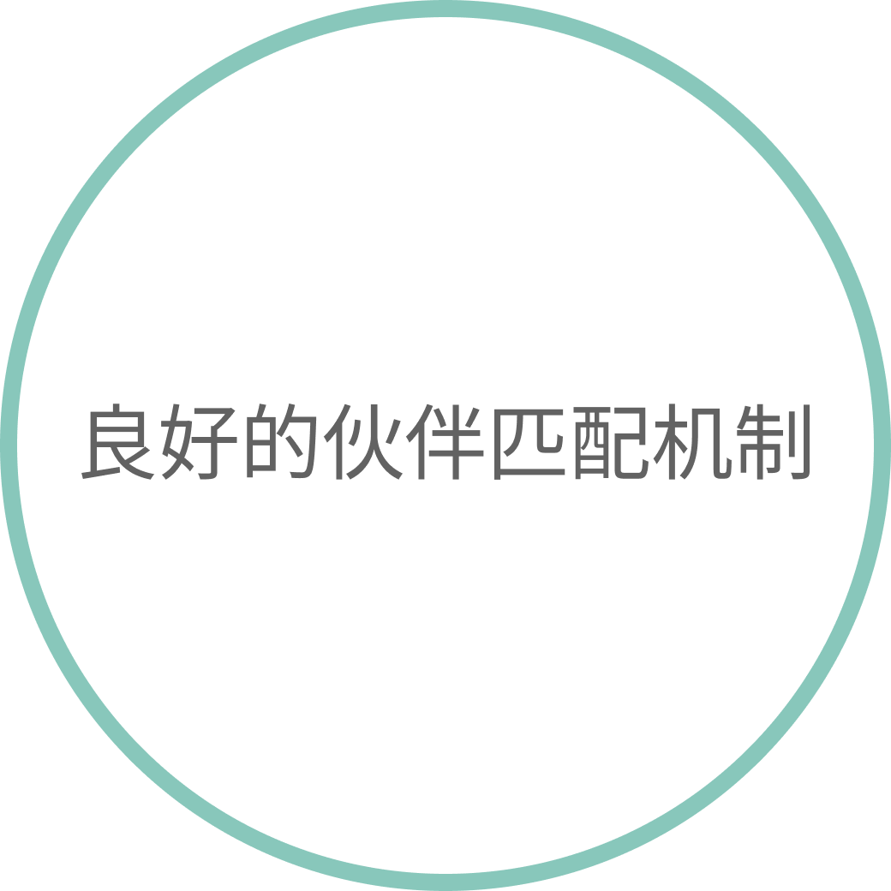
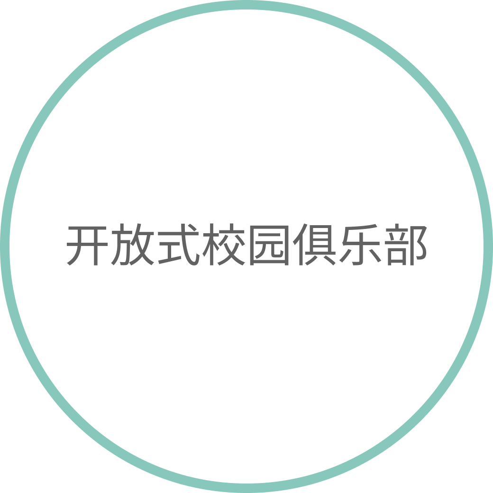

目标客户
在校大学生
我的职责
从0-1设计
周期
8周
问题&设计动机
一份研究数据表明有六成的在校大学生每周仅保持较低的运动频率;与此同时，在大量社会调查报告中显示，对大学生运动频率造成影响的主要因素有：缺少伙伴、感到无趣、懒惰需要督促、缺少时间。
该如何帮助在校大学生提高运动频率并引起运动兴趣？
部分学生表示加入社团与体育课并不能有效解决问题，而市面上暂时没有一款专门针对大学生运动群体的App，有同学提出设计一款针对大学生的运动与社交App能有效提高该群体的运动频率。
产品简介
Beat是一款运动&社交类App，选择不同类型的运动项目，App帮助并记录使用者的运动情况；通过线上俱乐部实现跨校园的群体社交，让使用者的社交范围不仅局限于校内，实现校园无“围墙”化；更有充满猎奇与游戏化的云约跑来帮助运动需要“督促”的人们加入其中。

用户调研
从调研结果来看，大学生群体运动时间偏好在下午至晚间，一方面由于课程时间安排，下午开始有部分热爱运动且没有课程的同学会选择体育锻炼；另一方面在傍晚后，大多数学生无其他安排，会根据个人偏好选择前往操场或者体育馆进行活动。

数据总结
大学生进行体育锻炼目的主要是健康、外貌、乐趣、能力、社交这几方面，而又有近九成的大学生都有使用过运动类App，充分表明设计一款目标人群为在校大学生的运动&社交类App能够有非常好的未来市场和发展空间。
01 用户痛点是什么？该如何解决？
从调研结果来看，大学生群体运动时间偏好在下午至晚间，一方面由于课程时间安排，下午开始有部分热爱运动且没有课程的同学会选择体育锻炼；另一方面在傍晚后，大多数学生无其他安排，会根据个人偏好选择前往操场或者体育馆进行活动。
关键特征
社交圈难拓展
- 社交恐惧症
- 不知如何与感兴趣的社交圈建立联系

时间难安排
- 有好友时间难以统一
- 运动时间无规划
缺乏趣味性
- 运动感到无趣
- 市面上App缺乏趣味性
同理心地图
通过同理心地图，与潜在用户形成一致的认知，更好的理解用户行为、选择、决定的深层动机，做到真正的“以用户为中心”进行设计。

用户画像
根据上述对用户痛点的调查与总结，将抽象的痛点概念附着于一个具象的人物身上，帮助设计师更好的理解和分析设计思路，达到更好的用户体验。
02 关于产品的头脑风暴
经过充分的调研，最终为产品制定了三个关键的设计需求。

+

+